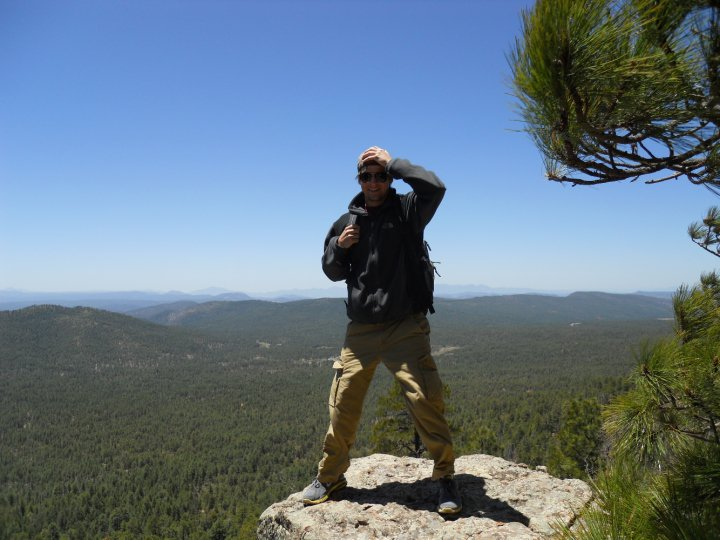

About Me
Hello! My name is Scott Peterson - as the header above indicates. I enrolled in the University of Richmond Bootcamp because I wanted to an in-demand skill to make me a more marketable job candidate. I'm enjoying the work so far; it combines the right balance of structure, creativity and problem solving.
I grew up in the Northern Virginia suburbs and attended Falls Church High School where I competed in a number of varsity sports including Lacrosse, Golf, Track, Cross Country, and Wrestling. After high school, I attended Longwood University, declaring as a Psychology major. After completing Psychology 101, I decided that this major was not the right fit for me. I spent my next semester taking a variety of gen ed courses. After this semester I declared as a History major, stuck with it, and graduated with a B.A. in 2008.
After college, I served for two years in the AmeriCorps VISTA program, where I was placed in the Environmental Protection and Natural Resources department of the Salt River Pima-Maricopa Indian Community. I managed a volunteer engagement program and a blight removal program. After my second term ended, I took a marketing position for a small engineering services company in Phoenix, AZ. I organized events and made updates to the website. This was my first real experience using HTML
In the Summer of 2015 I moved back to Virginia, settling in Richmond to be closer to family. I took a job with a healthcare services company - a temporary job which lasted for two years. I was frustrated with almost ever aspect of the work and the organization. This experience was one of the compelling events to learn a new skill. As of now, I am focusing on the coursework in this bootcamp.
Connect with Me